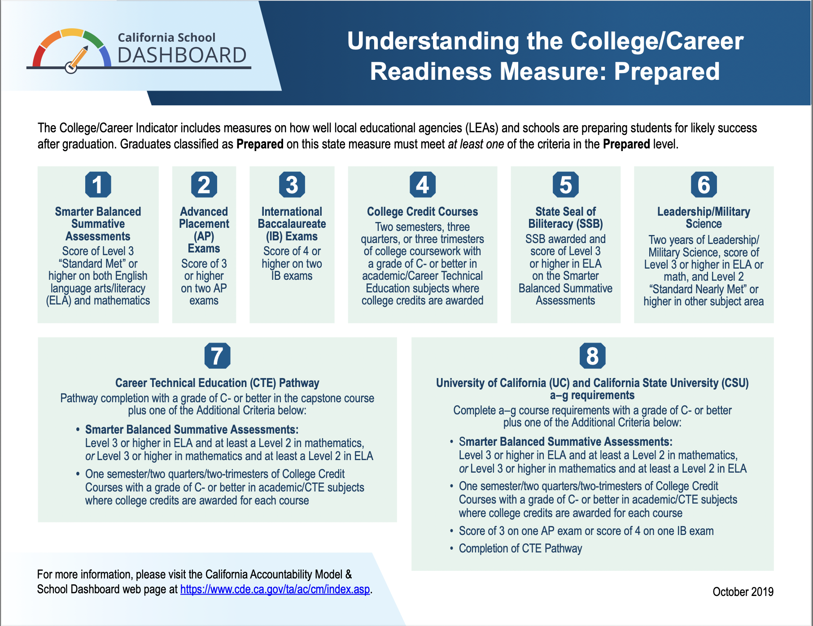

1 Assessments
2 AP
4 College Credit
7 CTE
8 A-G
Adding Computer Science courses can help your school meet the California School Dashboard's College and Career Readiness Indicators.

CS Course Codes
Download the MakeCSCount Flyer from CSforCA
Full calendar
Tweets by @makeCSCount